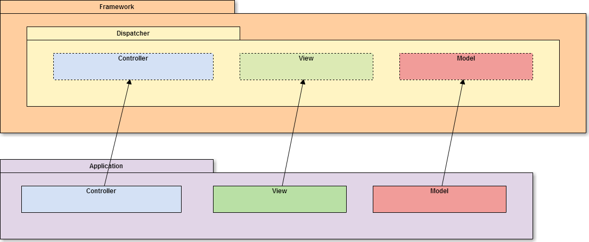
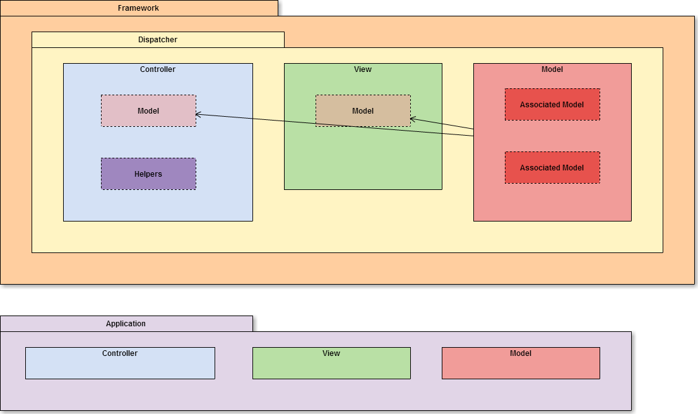
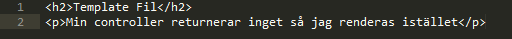
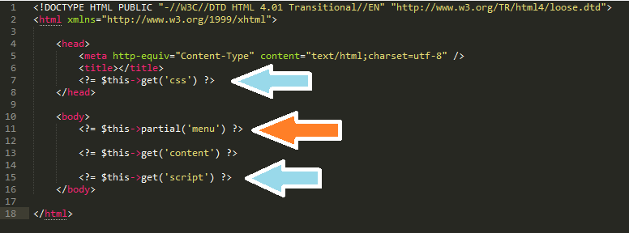

Yet another framework...
Andreas Fridlund - afrxx09
Allt styrs från "Dispatchern" med url-requests
www.mydomain.com/category/view/123/
MVC-klasser från applikationen initiseras
"Associerar" klasserna
Dispatchern säger till controllern exekvera önskad funktion.
(Frame work tar paus)
Returnerar sitt resultat
(Eller skiter i det, för i mitt ramverk behövs inte det)
Som "content" i "Master View" / "Layout View"
Dispatcher antar då att det finns en template.
Layout View tolkar Layouten-filen
Lägger till "content"
Laddar in partials
Lägger till CSS och javascript
Krävs väldigt lite kod för att skapa program
public static $routes = array(
'root' => 'category#index',
'category' => 'all'
);
namespace models;
class CategoryModel extends \core\AppModel{
public $hasMany = ('Product');
public $allowedFields = ('id', 'name', 'description');
}
namespace views;
class CategoryView extends \core\AppView{
public $css = ('category.css');
public function index($categories){
//bygg sträng av html med $categories
}
public function add(){
//formulär för att lägga till kategori
}
}
namespace controllers;
class CategoryController extends \core\AppController{
public $helpers = array('Session');
public function index(){
$categories = $this->Category->all();
return $this->view->index($categories);
}
public function add(){
return $this->view->index();
}
public function create(){
$newCategory = $this->view->getPost();
$this->Category->create($newCategory);
}
//...
}